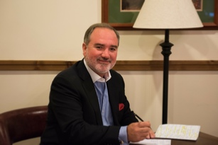

Uwe T Schmidt
Uwe T Schmidt is founder, chairman and CEO of MetalsBridge, LLC.
In 2001, Mr Schmidt merged his steel trading and his supply chain management business (MetalsBridge) into MNA AG's North American trading group, Ferrostaal Incorporated (FSI), retaining sole control of other, non-steel trading and distribution activities.
Post merger, Schmidt took the helm of subsidiary FSI as President and CEO. During his tenure, he focused on first growing and then resrtructuring its international steel business. Under his leadershipm the copany expanded its sales from US$ 585 million to over US$ 1.2 billion by 2004.
In 2005, Schmidt joined the Manadement Board of MAN Ferrostaal AG in Germany subsequently consolidating all of MAN AG's inyternational metals trading activities as CHairman and CEO of the newly-formed, Houston-based Ferrostaal Metals Group, LLC ("FMG") with sales of US$ 2 billion and offices in 60 countries.
At the request of MAN AG, Schmidt restructured and merged FMG with CCC Steel GmbH & CO. KG to form one of the world's argest independent steel trading organizations, Coutinho & Ferrostaal GmbH & Co. KG ("C&F") in 2007/. Through 2010, he served as Managing Director if the newly formed copany as well as Member of the Management Board at Ferrostaal AG.
In 2008, Ferrostaal AG and Solar Millennium AG engaged Schmidt to develop and implement a strategy to become a major player in the emerging U.S. solar power sector. To this end, Solar Trust of Americ, LLC ("STA") was incorporated. During Schmidt's tenure, STA secured thousands of acres of prime real estate, all critical permits, licenses and transmission rights as well as lining up US$ 3 billion in project level financing required to support its 2,25 GWe project pipeline. Schmidt served as Chairman and CEO of STA until its shareholders were unable to continue funding STA and they declined Schmidt's offers to buy-out their interests.
Schmidt's career also includes various CEO, senior management ad boaerd of director positions with some of the world's leading pubically-traded industrial companies, including Thyssen AG (now ThyssenKrupp AG); Bobel MetalleAG; and Olympic Continental Resources, LLC (a JV with Olympic Steel, Inc.). In addition to these activities, Schmidt has invested in numerous entrepreneural start-up ventures.
A graduate of the University of Western Ontario and Huron University College in Ontario, Canada, Schmidt has served on the Board of Directors of the Chicago Council on Foriegn Relation; the German American Chamber of COmmerce; Cleveland Capital Corp, LLC; Key Holdings; Board of Advisors of Cross Capital AG; and was a member of the American Institute for International Steel.